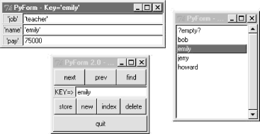

| I l@ve RuBoard |
|
16.7 PyForm: A Persistent Object ViewerRather than going into additional database interface details that are freely available at python.org, I'm going to close out this chapter by showing you one way to combine the GUI technology we met earlier in the text with the persistence techniques introduced in this chapter. This section presents PyForm,a Tkinter GUI designed to let you browse and edit tables of records:
Although this example is about GUIs and persistence, it also illustrates Python design techniques. To keep its implementation both simple and type-independent, the PyForm GUI is coded to expect tables to look like dictionaries of dictionaries. To support a variety of table and record types, PyForm relies on separate wrapper classes to translate tables and records to the expected protocol:
The net effect is that PyForm can be used to browse and edit a wide variety of table types, despite its dictionary interface expectations. When PyForm browses shelves and DBM files, table changes made within the GUI are persistent -- they are saved in the underlying files. When used to browse a shelve of class instances, PyForm essentially becomes a GUI frontend to a simple object database, one built using standard Python persistence tools. 16.7.1 Doing It the Hard WayBefore we get to the GUI, though, let's see why you'd want one in the first place. To experiment with shelves in general, I first coded a canned test data file. The script in Example 16-4 hardcodes a dictionary used to populate databases (cast), as well as a class used to populate shelves of class instances (Actor). Example 16-4. PP2E\Dbase\testdata.py# definitions for testing shelves, dbm, and formgui
cast = {
'rob': {'name': ('Rob', 'P'), 'job': 'writer', 'spouse': 'Laura'},
'buddy': {'name': ('Buddy', 'S'), 'job': 'writer', 'spouse': 'Pickles'},
'sally': {'name': ('Sally', 'R'), 'job': 'writer'},
'laura': {'name': ('Laura', 'P'), 'spouse': 'Rob', 'kids':1},
'milly': {'name': ('Milly', '?'), 'spouse': 'Jerry', 'kids':2},
'mel': {'name': ('Mel', 'C'), 'job': 'producer'},
'alan': {'name': ('Alan', 'B'), 'job': 'comedian'}
}
class Actor: # unnested file-level class
def __init__(self, name=( ), job=''): # no need for arg defaults,
self.name = name # for new pickler or formgui
self.job = job
def __setattr__(self, attr, value): # on setattr( ): validate
if attr == 'kids' and value > 10: # but set it regardless
print 'validation error: kids =', value
if attr == 'name' and type(value) != type(( )):
print 'validation error: name type =', type(value)
self.__dict__[attr] = value # don't trigger __setattr__
The cast object here is intended to represent a table of records (it's really a dictionary of dictionaries when written out in Python syntax like this). Now, given this test data, it's easy to populate a shelve with cast dictionaries. Simply open a shelve and copy over cast, key for key, as shown in Example 16-5. Example 16-5. PP2E\Dbase\castinit.pyimport shelve
from testdata import cast
db = shelve.open('data/castfile') # create a new shelve
for key in cast.keys( ):
db[key] = cast[key] # store dictionaries in shelve
Once you've done that, it's almost as easy to verify your work with a script that prints the contents of the shelve, as shown in Example 16-6. Example 16-6. PP2E\Dbase\castdump.pyimport shelve
db = shelve.open('data/castfile') # reopen shelve
for key in db.keys( ): # show each key,value
print key, db[key]
Here are these two scripts in action, populating and displaying a shelve of dictionaries: C:\...\PP2E\Dbase>python castinit.py
C:\...\PP2E\Dbase>python castdump.py
alan {'job': 'comedian', 'name': ('Alan', 'B')}
mel {'job': 'producer', 'name': ('Mel', 'C')}
buddy {'spouse': 'Pickles', 'job': 'writer', 'name': ('Buddy', 'S')}
sally {'job': 'writer', 'name': ('Sally', 'R')}
rob {'spouse': 'Laura', 'job': 'writer', 'name': ('Rob', 'P')}
milly {'spouse': 'Jerry', 'name': ('Milly', '?'), 'kids': 2}
laura {'spouse': 'Rob', 'name': ('Laura', 'P'), 'kids': 1}
So far, so good. But here is where you reach the limitations of manual shelve processing: to modify a shelve, you need much more general tools. You could write little Python scripts that each perform very specific updates. Or you might even get by for awhile typing such update commands by hand in the interactive interpreter: >>> import shelve
>>> db = shelve.open('data/castfile')
>>> rec = db['rob']
>>> rec['job'] = 'hacker'
>>> db['rob'] = rec
For all but the most trivial databases, though, this will get tedious in a hurry -- especially for a system's end users. What you'd really like is a GUI that lets you view and edit shelves arbitrarily, and can be started up easily from other programs and scripts, as shown in Example 16-7. Example 16-7. PP2E\Dbase\castview.pyimport shelve
from TableBrowser.formgui import FormGui # after initcast
db = shelve.open('data/castfile') # reopen shelve file
FormGui(db).mainloop( ) # browse existing shelve-of-dicts
To make this particular script work, we need to move on to the next section. 16.7.2 Doing It the Graphical WayThe path traced in the last section really is what led me to write PyForm, a GUI tool for editing arbitrary tables of records. When those tables are shelves and DBM files, the data PyForm displays is persistent; it lives beyond the GUI's lifetime. Because of that, PyForm can be seen as a simple database browser. 16.7.2.1 PyForm GUI codeWe've already met all the GUI interfaces PyForm uses earlier in this book, so I won't go into all of its implementation details here (see the chapters in Part II, for background details). Before we see the code at all, though, let's see what it does. Figure 16-1 shows PyForm in action on Windows, browsing a shelve of persistent instance objects, created from the testdata module's Actor class. It looks slightly different but works the same on Linux and Macs. Figure 16-1. PyForm displaying a shelf of Actor objectsPyForm uses a three-window interface to the table being browsed; all windows are packed for proper window expansion and clipping, as set by the rules we studied earlier in this book. The window in the upper left of Figure 16-1 is the main window, created when PyForm starts; it has buttons for navigating through a table, finding items by key, and updating, creating, and deleting records (more useful when browsing tables that persist between runs). The table (dictionary) key of the record currently displayed shows up in the input field in the middle of this window. The "index" button pops up the listbox window in the upper right, and selecting a record in either window at the top creates the form window at the bottom. The form window is used both to display a record and to edit it -- if you change field values and press "store," the record is updated. Pressing "new" clears the form for input of new values (fill in the "Key=>" field and press "store" to save the new record). Field values are typed with Python syntax, so strings are quoted (more on this later). When browsing a table with records that contain different sets of field names, PyForm erases and redraws the form window for new field sets as new records are selected; to avoid seeing the window recreated, use the same format for all records within a given table. On to the code. The first thing I did when writing PyForm was to code utility functions to hide some of the details of widget creation. By making a few simplifying assumptions (e.g., packing protocol), the module in Example 16-8 helps keep some GUI coding details out of the rest of the PyForm implementation. Example 16-8. PP2E\Dbase\guitools.py# added extras for entry width, calcgui font/color
from Tkinter import *
def frame(root, side, **extras):
widget = Frame(root)
widget.pack(side=side, expand=YES, fill=BOTH)
if extras: apply(widget.config, ( ), extras)
return widget
def label(root, side, text, **extras):
widget = Label(root, text=text, relief=RIDGE)
widget.pack(side=side, expand=YES, fill=BOTH)
if extras: apply(widget.config, ( ), extras)
return widget
def button(root, side, text, command, **extras):
widget = Button(root, text=text, command=command)
widget.pack(side=side, expand=YES, fill=BOTH)
if extras: apply(widget.config, ( ), extras)
return widget
def entry(root, side, linkvar, **extras):
widget = Entry(root, relief=SUNKEN, textvariable=linkvar)
widget.pack(side=side, expand=YES, fill=BOTH)
if extras: apply(widget.config, ( ), extras)
return widget
Armed with this utility module, the file in Example 16-9 implements the rest of the PyForm GUI. It uses the GuiMixin module we wrote in Chapter 9, for simple access to standard popup dialogs. It's also coded as a class that can be specialized in subclasses, or attached to a larger GUI. I run PyForm as a standalone program. Attaching its FormGui class really attaches its main window only, but it can be used to provide a pre-coded table browser widget for other GUIs. This file's FormGui class creates the GUI shown in Figure 16-1, and responds to user interaction in all three of the interface's windows. Because we've already covered all the GUI tools that PyForm uses, you should study this module's source code listing for additional implementation details. Notice, though, that this file knows almost nothing about the table being browsed, other than that it looks and feels like a dictionary of dictionaries. To understand how PyForm supports browsing things like shelves of class instances, you will need to look elsewhere (or at least wait for the next module). Example 16-9. PP2E\Dbase\TableBrowser\formgui.py#!/usr/local/bin/python
#############################################################################
# PyForm: a persistent table viewer GUI. Uses guimixin for std dialogs.
# Assumes the browsed table has a dictionary-of-dictionary interface, and
# relies on table wrapper classes to convert other structures as needed.
# Store an initial record with dbinit script to start a dbase from scratch.
# Caveat: doesn't do object method calls, shows complex field values poorly.
#############################################################################
from Tkinter import * # Tk widgets
from guitools import frame, label, button, entry # widget builders
from PP2E.Gui.Tools.guimixin import GuiMixin # common methods
class FormGui(GuiMixin, Frame):
def __init__(self, mapping): # an extended frame
Frame.__init__(self) # on default top-level
self.pack(expand=YES, fill=BOTH) # all parts expandable
self.master.title('PyForm 2.0 - Table browser')
self.master.iconname("PyForm")
self.makeMainBox( )
self.table = mapping # a dict, dbm, shelve, Table,..
self.index = mapping.keys( ) # list of table keys
self.cursor = -1 # current index position
self.currslots = [] # current form's (key,text)s
self.currform = None # current form window
self.listbox = None # index listbox window
def makeMainBox(self):
frm = frame(self, TOP)
frm.config(bd=2)
button(frm, LEFT, 'next', self.onNext) # next in list
button(frm, LEFT, 'prev', self.onPrev) # backup in list
button(frm, LEFT, 'find', self.onFind) # find from key
frm = frame(self, TOP)
self.keytext = StringVar( ) # current record's key
label(frm, LEFT, 'KEY=>') # change before 'find'
entry(frm, LEFT, self.keytext)
frm = frame(self, TOP)
frm.config(bd=2)
button(frm, LEFT, 'store', self.onStore) # updated entry data
button(frm, LEFT, 'new', self.onNew) # clear fields
button(frm, LEFT, 'index', self.onMakeList) # show key list
button(frm, LEFT, 'delete', self.onDelete) # show key list
button(self, BOTTOM,'quit', self.quit) # from guimixin
def onPrev(self):
if self.cursor <= 0:
self.infobox('Backup', "Front of table")
else:
self.cursor = self.cursor - 1
self.display( )
def onNext(self):
if self.cursor >= len(self.index)-1:
self.infobox('Advance', "End of table")
else:
self.cursor = self.cursor + 1
self.display( )
def sameKeys(self, record): # can we reuse the same form?
keys1 = record.keys( )
keys2 = map(lambda x:x[0], self.currslots)
keys1.sort(); keys2.sort( ) # keys list order differs
return keys1 == keys2 # if insertion-order differs
def display(self):
key = self.index[self.cursor] # show record at index cursor
self.keytext.set(key) # change key in main box
record = self.table[key] # in dict, dbm, shelf, class
if self.sameKeys(record):
self.currform.title('PyForm - Key=' + `key`)
for (field, text) in self.currslots:
text.set(`record[field]`) # same fields? reuse form
else: # expr `x` works like repr(x)
if self.currform:
self.currform.destroy( ) # different fields?
new = Toplevel( ) # replace current box
new.title('PyForm - Key=' + `key`) # new resizable window
new.iconname("pform")
left = frame(new, LEFT)
right = frame(new, RIGHT)
self.currslots = [] # list of (field, entry)
for field in record.keys( ):
label(left, TOP, `field`) # key,value to strings
text = StringVar( ) # we could sort keys here
text.set( `record[field]` )
entry(right, TOP, text, width=40)
self.currslots.append((field, text))
self.currform = new
new.protocol('WM_DELETE_WINDOW', lambda:0) # ignore destroy's
self.selectlist( ) # update listbox
def onStore(self):
if not self.currform: return
key = self.keytext.get( )
if key in self.index: # change existing record
record = self.table[key] # not: self.table[key][field]=
else:
record = {} # create a new record
self.index.append(key) # add to index and listbox
if self.listbox:
self.listbox.insert(END, key) # or at len(self.index)-1
for (field, text) in self.currslots:
try: # fill out dictionary rec
record[field] = eval(text.get( )) # convert back from string
except:
self.errorbox('Bad data: "%s" = "%s"' % (field, text.get( )))
record[field] = None
self.table[key] = record # add to dict, dbm, shelf,...
self.onFind(key) # readback: set cursor,listbox
def onNew(self):
if not self.currform: return # clear input form and key
self.keytext.set('?%d' % len(self.index)) # default key unless typed
for (field, text) in self.currslots: # clear key/fields for entry
text.set('')
self.currform.title('Key: ?')
def onFind(self, key=None):
target = key or self.keytext.get( ) # passed in, or entered
try:
self.cursor = self.index.index(target) # find label in keys list
self.display( )
except:
self.infobox('Not found', "Key doesn't exist", 'info')
def onDelete(self):
if not self.currform or not self.index: return
currkey = self.index[self.cursor]
del self.table[currkey] # table, index, listbox
del self.index[self.cursor:self.cursor+1] # like "list[i:i+1] = []"
if self.listbox:
self.listbox.delete(self.cursor) # delete from listbox
if self.cursor < len(self.index):
self.display( ) # show next record if any
elif self.cursor > 0:
self.cursor = self.cursor-1 # show prior if delete end
self.display( )
else: # leave box if delete last
self.onNew( )
def onList(self,evnt):
if not self.index: return # on listbox double-click
index = self.listbox.curselection( ) # fetch selected key text
label = self.listbox.get(index) # or use listbox.get(ACTIVE)
self.onFind(label) # and call method here
def onMakeList(self):
if self.listbox: return # already up?
new = Toplevel( ) # new resizable window
new.title("PyForm - Key Index") # select keys from a listbox
new.iconname("pindex")
frm = frame(new, TOP)
scroll = Scrollbar(frm)
list = Listbox(frm, bg='white')
scroll.config(command=list.yview, relief=SUNKEN)
list.config(yscrollcommand=scroll.set, relief=SUNKEN)
scroll.pack(side=RIGHT, fill=BOTH)
list.pack(side=LEFT, expand=YES, fill=BOTH) # pack last, clip first
for key in self.index: # add to list-box
list.insert(END, key) # or: sort list first
list.config(selectmode=SINGLE, setgrid=1) # select,resize modes
list.bind('<Double-1>', self.onList) # on double-clicks
self.listbox = list
if self.index and self.cursor >= 0: # highlight position
self.selectlist( )
new.protocol('WM_DELETE_WINDOW', lambda:0) # ignore destroy's
def selectlist(self): # listbox tracks cursor
if self.listbox:
self.listbox.select_clear(0, self.listbox.size( ))
self.listbox.select_set(self.cursor)
if __name__ == '__main__':
from PP2E.Dbase.testdata import cast # self-test code
for k in cast.keys( ): print k, cast[k] # view in-memory dict-of-dicts
FormGui(cast).mainloop( )
for k in cast.keys( ): print k, cast[k] # show modified table on exit
The file's self-test code starts up the PyForm GUI to browse the in-memory dictionary of dictionaries called cast in the testdata module listed earlier. To start PyForm, you simply make and run the FormGui class object this file defines, passing in the table to be browsed. Here are the messages that show up in stdout after running this file and editing a few entries displayed in the GUI; the dictionary is displayed on GUI startup and exit: C:\...\PP2E\Dbase\TableBrowser>python formgui.py
alan {'job': 'comedian', 'name': ('Alan', 'B')}
sally {'job': 'writer', 'name': ('Sally', 'R')}
rob {'spouse': 'Laura', 'job': 'writer', 'name': ('Rob', 'P')}
mel {'job': 'producer', 'name': ('Mel', 'C')}
milly {'spouse': 'Jerry', 'name': ('Milly', '?'), 'kids': 2}
buddy {'spouse': 'Pickles', 'job': 'writer', 'name': ('Buddy', 'S')}
laura {'spouse': 'Rob', 'name': ('Laura', 'P'), 'kids': 1}
alan {'job': 'comedian', 'name': ('Alan', 'B')}
jerry {'spouse': 'Milly', 'name': 'Jerry', 'kids': 0}
sally {'job': 'writer', 'name': ('Sally', 'R')}
rob {'spouse': 'Laura', 'job': 'writer', 'name': ('Rob', 'P')}
mel {'job': 'producer', 'name': ('Mel', 'C')}
milly {'spouse': 'Jerry', 'name': ('Milly', '?'), 'kids': 2}
buddy {'spouse': 'Pickles', 'job': 'writer', 'name': ('Buddy', 'S')}
laura {'name': ('Laura', 'P'), 'kids': 3, 'spouse': 'bob'}
The last line (in bold) represents a change made in the GUI. Since this is an in-memory table, changes made in the GUI are not retained (dictionaries are not persistent by themselves). To see how to use the PyForm GUI on persistent stores like DBM files and shelves, we need to move on to the next topic. 16.7.2.2 PyForm table wrappersThe following file defines generic classes that "wrap" (interface with) various kinds of tables for use in PyForm. It's what makes PyForm useful for a variety of table types. The prior module was coded to handle GUI chores, and assumes that tables expose a dictionary-of-dictionaries interface. Conversely, this next module knows nothing about the GUI, but provides the translations necessary to browse non-dictionary objects in PyForm. In fact, this module doesn't even import Tkinter at all -- it strictly deals in object protocol conversions and nothing else. Because PyForm's implementation is divided into functionally distinct modules like this, it's easier to focus on each module's task in isolation. Here is the hook between the two modules: for special kinds of tables, PyForm's FormGui is passed an instance of the Table class coded here. The Table class intercepts table index fetch and assignment operations, and uses an embedded record wrapper class to convert records to and from dictionary format as needed. For example, because DBM files can store only strings, Table converts real dictionaries to and from their printable string representation on table stores and fetches. For class instances, Table extracts the object's __dict__ attribute dictionary on fetches, and copies a dictionary's fields to attributes of a newly generated class instance on stores.[3] The end result is that the GUI thinks the table is all dictionaries, even if it is really something very different here.
While you study this module's listing, shown in Example 16-10, notice that there is nothing here about the record formats of any particular database. In fact, there was none in the GUI-related formgui module either. Because neither module cares about the structure of fields used for database records, both can be used to browse arbitrary records. Example 16-10. PP2E\Dbase\formtable.py#############################################################################
# PyForm table wrapper classes and tests
# Because PyForm assumes a dictionary-of-dictionary interface, this module
# converts strings and class instance records to and from dicts. PyForm
# contains the table mapping--Table is not a PyForm subclass. Note that
# some of the wrapper classes may be useful outside PyForm--DmbOfString can
# wrap a dbm containing arbitrary datatypes. Run the dbinit scripts to
# start a new database from scratch, and run the dbview script to browse
# a database other than the one tested here. No longer requires classes to
# have defaults in constructor args, and auto picks up record class from the
# first one fetched if not passed in to class-record wrapper. Caveat: still
# assumes that all instances in a table are instances of the same class.
############################################################################
#############################################################################
# records within tables
#############################################################################
class DictionaryRecord:
def todict(self, value):
return value # to dictionary: no need to convert
def fromdict(self, value):
return value # from dictionary: no need to convert
class StringRecord:
def todict(self, value):
return eval(value) # convert string to dictionary (or any)
def fromdict(self, value):
return str(value) # convert dictionary (or any) to string
class InstanceRecord:
def __init__(self, Class=None): # need class object to make instances
self.Class = Class
def todict(self, value): # convert instance to attr dictionary
if not self.Class: # get class from obj if not yet known
self.Class = value.__class__
return value.__dict__
def fromdict(self, value): # convert attr dictionary to instance
try:
class Dummy: pass # try what new pickle does
instance = Dummy( ) # fails in restricted mode
instance.__class__ = self.Class
except: # else call class, no args
instance = self.Class( ) # init args need defaults
for attr in value.keys( ):
setattr(instance, attr, value[attr]) # set instance attributes
return instance # may run Class.__setattr__
#############################################################################
# table containing records
#############################################################################
class Table:
def __init__(self, mapping, converter): # table object, record converter
self.table = mapping # wrap arbitrary table mapping
self.record = converter # wrap arbitrary record types
def storeItems(self, items): # initialize from dictionary
for key in items.keys( ): # do __setitem__ to xlate, store
self[key] = items[key]
def printItems(self): # print wrapped mapping
for key in self.keys( ): # do self.keys to get table keys
print key, self[key] # do __getitem__ to fetch, xlate
def __getitem__(self, key): # on tbl[key] index fetch
rawval = self.table[key] # fetch from table mapping
return self.record.todict(rawval) # translate to dictionary
def __setitem__(self, key, value): # on tbl[key]=val index assign
rawval = self.record.fromdict(value) # translate from dictionary
self.table[key] = rawval # store in table mapping
def __delitem__(self, key): # delete from table mapping
del self.table[key]
def keys(self): # get table mapping keys index
return self.table.keys( )
def close(self):
if hasattr(self.table, 'close'): # call table close if has one
self.table.close( ) # may need for shelves, dbm
#############################################################################
# table/record combinations
#############################################################################
import shelve, anydbm
def ShelveOfInstance(filename, Class=None):
return Table(shelve.open(filename), InstanceRecord(Class))
def ShelveOfDictionary(filename):
return Table(shelve.open(filename), DictionaryRecord( ))
def ShelveOfString(filename):
return Table(shelve.open(filename), StringRecord( ))
def DbmOfString(filename):
return Table(anydbm.open(filename, 'c'), StringRecord( ))
def DictOfInstance(dict, Class=None):
return Table(dict, InstanceRecord(Class))
def DictOfDictionary(dict):
return Table(dict, DictionaryRecord( ))
def DictOfString(filename):
return Table(dict, StringRecord( ))
ObjectOfInstance = DictOfInstance # other mapping objects
ObjectOfDictionary = DictOfDictionary # classes that look like dicts
ObjectOfString = DictOfString
#############################################################################
# test common applications
#############################################################################
if __name__ == '__main__':
from sys import argv
from formgui import FormGui # get dict-based gui
from PP2E.Dbase.testdata import Actor, cast # get class, dict-of-dicts
TestType = 'shelve' # shelve, dbm, dict
TestInit = 0 # init file on startup?
TestFile = '../data/shelve1' # external filename
if len(argv) > 1: TestType = argv[1]
if len(argv) > 2: TestInit = int(argv[2])
if len(argv) > 3: TestFile = argv[3]
if TestType == 'shelve': # python formtbl.py shelve?
print 'shelve-of-instance test'
table = ShelveOfInstance(TestFile, Actor) # wrap shelf in Table object
if TestInit:
table.storeItems(cast) # python formtbl.py shelve 1
FormGui(table).mainloop( )
table.close( )
ShelveOfInstance(TestFile).printItems( ) # class picked up on fetch
elif TestType == 'dbm': # python formtbl.py dbm
print 'dbm-of-dictstring test'
table = DbmOfString(TestFile) # wrap dbm in Table object
if TestInit:
table.storeItems(cast) # python formtbl.py dbm 1
FormGui(table).mainloop( )
table.close( )
DbmOfString(TestFile).printItems( ) # dump new table contents
Besides the Table and record-wrapper classes, the module defines generator functions (e.g., ShelveOfInstance) that create a Table for all reasonable table and record combinations. Not all combinations are valid; DBM files, for example, can only contain dictionaries coded as strings, because class instances don't easily map to the string value format expected by DBM. However, these classes are flexible enough to allow additional Table configurations to be introduced. The only thing that is GUI-related about this file at all is its self-test code at the end. When run as a script, this module starts a PyForm GUI to browse and edit either a shelve of persistent Actor class instances or a DBM file of dictionaries, by passing in the right kind of Table object. The GUI looks like the one we saw in Figure 16-1 earlier; when run without arguments, the self-test code lets you browse a shelve of class instances: C:\...\PP2E\Dbase\TableBrowser>python formtable.py shelve-of-instance test ...display of contents on exit... Because PyForm displays a shelve this time, any changes you make are retained after the GUI exits. To reinitialize the shelve from the cast dictionary in testdata, pass a second argument of "1" ("0" means don't reinitialize the shelve). To override the script's default shelve filename, pass a different name as a third argument: C:\...\PP2E\Dbase\TableBrowser>python formtable.py shelve 1 C:\...\PP2E\Dbase\TableBrowser>python formtable.py shelve 0 ../data/shelve1 To instead test PyForm on a DBM file of dictionaries mapped to strings, pass a dbm in the first command-line argument; the next two arguments work the same: C:\...\PP2E\Dbase\TableBrowser>python formtable.py dbm 1 ..\data\dbm1 dbm-of-dictstring test ...display of contents on exit... Finally, because these self-tests ultimately process concrete shelve and DBM files, you can manually open and inspect their contents using normal library calls. Here is what they look like when opened in an interactive session: C:\...\PP2E\Dbase\data>ls
dbm1 myfile shelve1
C:\...\PP2E\Dbase\data>python
>>> import shelve
>>> db = shelve.open('shelve1')
>>> db.keys( )
['alan', 'buddy', 'sally', 'rob', 'milly', 'laura', 'mel']
>>> db['laura']
<PP2E.Dbase.testdata.Actor instance at 799850>
>>> import anydbm
>>> db = anydbm.open('dbm1')
>>> db.keys( )
['alan', 'mel', 'buddy', 'sally', 'rob', 'milly', 'laura']
>>> db['laura']
"{'name': ('Laura', 'P'), 'kids': 2, 'spouse': 'Rob'}"
The shelve file contains real Actor class instance objects, and the DBM file holds dictionaries converted to strings. Both formats are retained in these files between GUI runs and are converted back to dictionaries for later redisplay.[4]
16.7.2.3 PyForm creation and view utility scriptsThe formtable module's self-test code proves that it works, but it is limited to canned test case files and classes. What about using PyForm for other kinds of databases that store more useful kinds of data? Luckily, both the formgui and formtable modules are written to be generic -- they are independent of a particular database's record format. Because of that, it's easy to point PyForm to databases of your own; simply import and run the FormGui object with the (possibly wrapped) table you wish to browse. The required startup calls are not too complex, and you could type them at the interactive prompt every time you want to browse a database; but it's usually easier to store them in scripts so they can be reused. The script in Example 16-11, for example, can be run to open PyForm on any shelve containing records stored in class instance or dictionary format. Example 16-11. PP2E\Dbase\dbview.py##################################################################
# view any existing shelve directly; this is more general than a
# "formtable.py shelve 1 filename" cmdline--only works for Actor;
# pass in a filename (and mode) to use this to browse any shelve:
# formtable auto picks up class from the first instance fetched;
# run dbinit1 to (re)initialize dbase shelve with a template.
##################################################################
from sys import argv
from formtable import *
from formgui import FormGui
mode = 'class'
file = '../data/mydbase-' + mode
if len(argv) > 1: file = argv[1] # dbview.py file? mode??
if len(argv) > 2: mode = argv[2]
if mode == 'dict':
table = ShelveOfDictionary(file) # view dictionaries
else:
table = ShelveOfInstance(file) # view class objects
FormGui(table).mainloop( )
table.close( ) # close needed for some dbm
The only catch here is that PyForm doesn't handle completely empty tables very well; there is no way to add new records within the GUI unless a record is already present. That is, PyForm has no record layout design tool; its "new" button simply clears an existing input form. Because of that, to start a new database from scratch, you need to add an initial record that gives PyForm the field layout. Again, this requires only a few lines of code that could be typed interactively, but why not instead put it in generalized scripts for reuse? The file in Example 16-12, shows one way to go about initializing a PyForm database with a first empty record. Example 16-12. PP2E\Dbase\dbinit1.py######################################################################
# store a first record in a new shelve to give initial fields list;
# PyForm GUI requires an existing record before you can more records;
# delete the '?' key template record after real records are added;
# change mode, file, template to use this for other kinds of data;
# if you populate shelves from other data files you don't need this;
# see dbinit2 for object-based version, and dbview to browse shelves.
######################################################################
import os
from sys import argv
mode = 'class'
file = '../data/mydbase-' + mode
if len(argv) > 1: file = argv[1] # dbinit1.py file? mode??
if len(argv) > 2: mode = argv[2]
try:
os.remove(file) # delete if present
except: pass
if mode == 'dict':
template = {'name': None, 'age': None, 'job': None} # start dict shelve
else:
from PP2E.Dbase.person import Person # one arg defaulted
template = Person(None, None) # start object shelve
import shelve
dbase = shelve.open(file) # create it now
dbase['?empty?'] = template
dbase.close( )
Now, simply change some of this script's settings or pass in command-line arguments to generate a new shelve-based database for use in PyForm. You can substitute any fields list or class name in this script to maintain a simple object database with PyForm that keeps track of real-world information (we'll see two such databases in action in a moment). The empty record shows up with key "?empty?" when you first browse the database with dbview; replace it with a first real record using the PyForm "store" key, and you are in business. As long as you don't change the database's shelve outside of the GUI, all its records will have the same fields format, as defined in the initialization script. But notice that the dbinit1 script goes straight to the shelve file to store the first record; that's fine today, but might break if PyForm is ever changed to do something more custom with its stored data representation. Perhaps a better way to populate tables outside the GUI is to use the Table wrapper classes it employs. The following alternative script, for instance, initializes a PyForm database with generated Table objects, not direct shelve operations (see Example 16-13). Example 16-13. PP2E\Dbase\dbinit2.py#################################################################
# this works too--based on Table objects not manual shelve ops;
# store a first record in shelve, as required by PyForm GUI.
#################################################################
from formtable import *
import sys, os
mode = 'dict'
file = '../data/mydbase-' + mode
if len(sys.argv) > 1: file = sys.argv[1]
if len(sys.argv) > 2: mode = sys.argv[2]
try:
os.remove(file)
except: pass
if mode == 'dict':
table = ShelveOfDictionary(file)
template = {'name': None, 'shoesize': None, 'language': 'Python'}
else:
from PP2E.Dbase.person import Person
table = ShelveOfInstance(file, Person)
template = Person(None, None).__dict__
table.storeItems({'?empty?': template})
table.close( )
Let's put these scripts to work to initialize and edit a couple of custom databases. Figure 16-2 shows one being browsed after initializing the database with a script, and adding a handful of real records within the GUI. Figure 16-2. A shelf of Person objects (dbinit1, dbview)The listbox here shows the record I added to the shelve within the GUI. I ran the following commands to initialize the database with a starter record and open it in PyForm to add records (that is, Person class instances): C:\...\PP2E\Dbase\TableBrowser>python dbinit1.py C:\...\PP2E\Dbase\TableBrowser>python dbview.py You can tweak the class name or fields dictionary in the dbinit scripts to initialize records for any sort of database you care to maintain with PyForm; use dictionaries if you don't want to represent persistent objects with classes (but classes let you add other sorts of behavior as methods not visible under PyForm). Be sure to use a distinct filename for each database; the initial "?empty?" record can be deleted as soon as you add a real entry (later, simply select an entry from the listbox and press "new" to clear the form for input of a new record's values). The data displayed in the GUI represents a true shelve of persistent Person class instance objects -- changes and additions made in the GUI will be retained for the next time you view this shelve with PyForm. If you like to type, though, you can still open the shelve directly to check PyForm's work: C:\...\PP2E\Dbase\data>ls
mydbase-class myfile shelve1
C:\...\PP2E\Dbase\data>python
>>> import shelve
>>> db = shelve.open('mydbase-class')
>>> db.keys( )
['emily', 'jerry', '?empty?', 'bob', 'howard']
>>> db['bob']
<PP2E.Dbase.person.Person instance at 798d70>
>>> db['emily'].job
'teacher'
>>> db['bob'].tax
30000.0
Notice that "bob" is an instance of the Person class we met earlier in this chapter (see the shelve section). Assuming that the person module is still the version that introduced a __getattr__ method, asking for a shelved object's tax attribute computes a value on the fly, because this really invokes a class method. Also note that this works even though Person was never imported here -- Python loads the class internally when recreating its shelved instances. You can just as easily base a PyForm-compatible database on an internal dictionary structure, instead of classes. Figure 16-3 shows one being browsed, after being initialized with a script and populated with the GUI. Figure 16-3. A shelf of dictionaries (dbinit2, dbview)Besides its different internal format, this database has a different record structure (its record's field names differ from the last example), and it is stored in a shelve file of its own. Here are the commands I used to initialize and edit this database: C:\...\PP2E\Dbase\TableBrowser>python dbinit2.py ../data/mydbase-dict dict C:\...\PP2E\Dbase\TableBrowser>python dbview.py ../data/mydbase-dict dict After adding a few records (that is, dictionaries) to the shelve, you can either view them again in PyForm or open the shelve manually to verify PyForm's work: C:\...\PP2E\Dbase\data>ls
mydbase-class mydbase-dict myfile shelve1
C:\...\PP2E\Dbase\data>python
>>> db = shelve.open('mydbase-dict')
>>> db.keys( )
['tom', 'guido', '?empty?', 'larry', 'randal', 'mel']
>>> db['guido']
{'shoesize': 42, 'name': 'benevolent dictator', 'language': 'Python'}
>>> db['mel']['shoesize']
{'left': 7.5, 'right': 7L}
This time, shelve entries are really dictionaries, not instances of a class or converted strings. PyForm doesn't care, though -- because all tables are wrapped to conform to PyForm's interface, both formats look the same when browsed in the GUI. Notice that the "shoe size" and "language" fields in this screen shot really are a dictionary and list. You can type any Python expression syntax into this GUI's form fields to give values (that's why strings are quoted there). PyForm uses the Python backquotes expression to convert value objects for display (`x` is like repr(x), which is like str(x), but quotes are added around strings). To convert from a string back to value objects, PyForm uses the Python eval function to parse and evaluate the code typed in fields. The key entry/display field in the main window does not add or accept quotes around the key string, because keys must still be strings in things like shelves (even though fields can be arbitrary types).
Although PyForm expects to find a dictionary-of-dictionary interface (protocol) in the tables it browses, a surprising number of objects fit this mold because dictionaries are so pervasive in Python object internals. In fact, PyForm can be used to browse things that have nothing to do with the notion of database tables of records at all, as long as they can be made to conform to the protocol. For instance, the Python sys.modules table we met in Chapter 2 is a built-in dictionary of loaded module objects. With an appropriate wrapper class to make modules look like dictionaries, there's no reason we can't browse the in-memory sys.modules with PyForm too, as shown in Example 16-14. Example 16-14. PP2E\Dbase\TableBrowser\viewsysmod.py# view the sys.modules table in FormGui
class modrec:
def todict(self, value):
return value.__dict__ # not dir(value): need dict
def fromdict(self, value):
assert 0, 'Module updates not supported'
import sys
from formgui import FormGui
from formtable import Table
FormGui(Table(sys.modules, modrec())).mainloop( )
This script defines a class to pull out a module's __dict__ attribute dictionary (formtable's InstanceRecord won't do, because it also looks for a __class__ ). The rest of it simply passes sys.modules to PyForm (FormGui) wrapped in a Table object; the result appears in Figure 16-4. Figure 16-4. FormGui browsing sys.modules (viewsysmod)With similar record and table wrappers, all sorts of objects could be viewed in PyForm. As usual in Python, all that matters is that they provide a compatible interface. 16.7.2.4 PyForm limitationsAlthough the sys.modules viewer script works, it also highlights a few limitations of PyForm's current design:
In other words, there is room for improvement if you care to experiment. There are other coding styles you might wish to explore, as well. For instance, PyForm current overloads table index fetch and assignment, and the GUI uses dictionaries to represent records internally. It would be almost as easy to overload record field index fetch and assignment instead, and add a Table method for creating a new empty record. In this scheme, records held in PyForm would be whatever object the table stores (not dictionaries), and each field fetch or assignment in PyForm would be routed back to record wrapper classes. The downside of this approach is that PyForm could not browse any object unless it is wrapped in a Table. Raw dictionaries would not work, because they have no method for making new empties. Moreover, DBM files that map whole records to strings might need extra logic to handle field-at-a-time requests. On the other hand, extensions in this domain are somewhat open-ended, so we'll leave them as suggested exercises. PyForm was never meant to be a general Python object viewer. But as a simple GUI interface to tables of persistent objects, it meets its design goals as planned. Python's shelves and classes make such systems both easy to code and powerful to use. Complex data can be stored and fetched in a single step, and augmented with methods that provide dynamic record behavior. As an added bonus, by programming such programs in Python and Tkinter, they are automatically portable among all major GUI platforms. When you mix Python persistence and GUIs, you get a lot of features "for free." |
| I l@ve RuBoard |
|